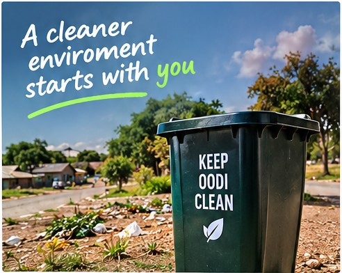

01
Limited Awareness
Some residents may not know the environmental and health risks of dumping waste in open spaces.
Understanding why waste is dumped or handled incorrectly helps our community find practical ways to prevent it.
Some residents may not know the environmental and health risks of dumping waste in open spaces.
When bins are unavailable, full or far away, people may leave rubbish on roadsides or in empty plots.
Missed or delayed waste collection can cause rubbish to pile up and attract pests.
Putting food scraps, plastics, glass and other rubbish together makes reuse and recycling harder.
Throwing rubbish anywhere can become a habit when people do not take responsibility for shared spaces.
Dumping household waste in drainage channels, fields and undesignated places harms the whole community.
Residents, community leaders and waste collection services can work together to identify local challenges, improve access to bins and share clear information.
